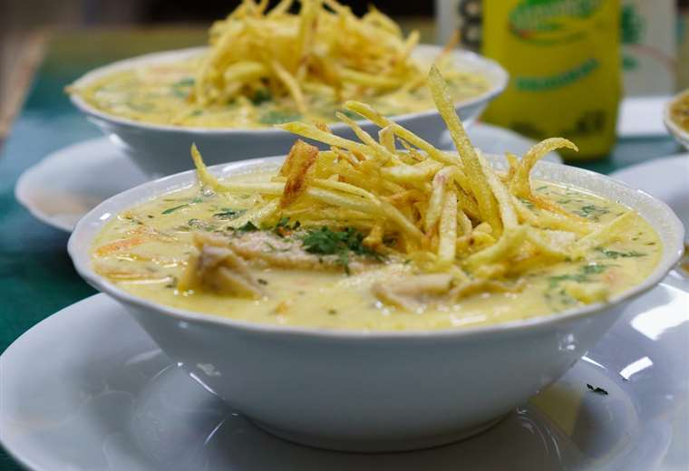
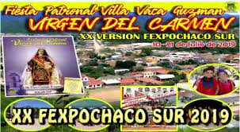

-
Musicas Y Danzas
Tradicionales En esta festividad, la música y las danzas tradicionales son protagonistas. Los habitantes de Muyupampa preparan coreografías llenas de alegría y ritmo, acompañadas de instrumentos típicos como la zampoña, el charango y los bombos. Durante la celebración, se pueden apreciar deslumbrantes trajes y máscaras que representan personajes mitológicos y folklóricos.

-
Comidas Típicas
En Villa Vaca Guzmán la alimentación familiar es básicamente con productos de la región y dentro de la gastronomía tenemos la sopa de gallina criolla, picante de gallina, sopa de maní, el pacumutu, chivo a la cruz, churrasco y watia de la cabeza de la vaca.

-
Fiesta Patronal
Los pobladores de Villa Vaca Guzmán, son devotos de la VIRGEN DEL CARMEN desde 1870-1875 aproximadamente, 30 años después de que las primeras casas fueran incendiadas por los aborígenes guaraníes. El 16 de julio los pobladores participan de diferentes actividades como monta de toros, pelea de gallos, carreta de caballos, etc.
